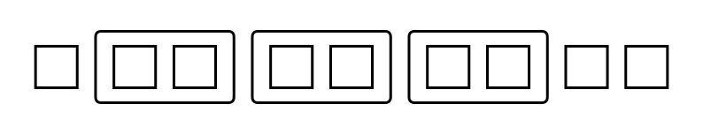
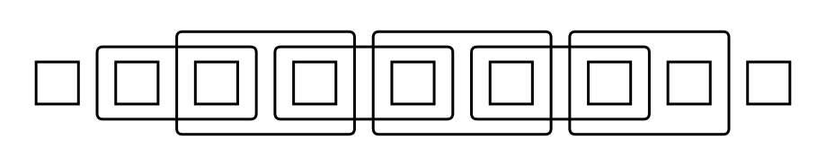
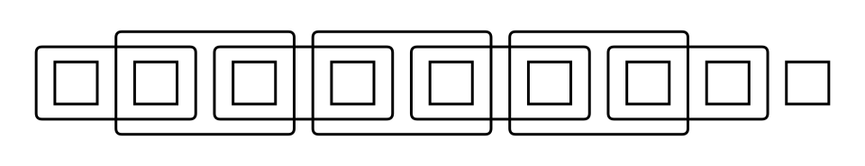
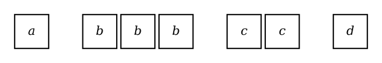
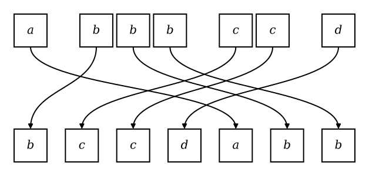
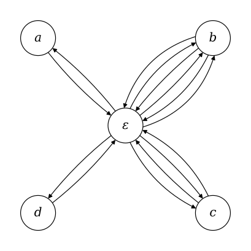
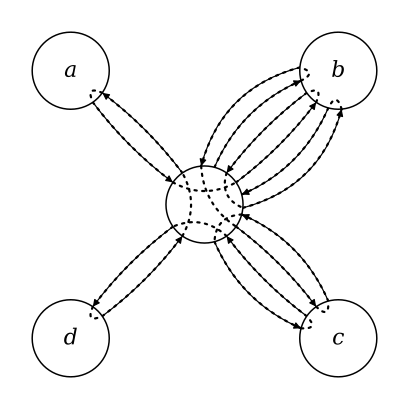
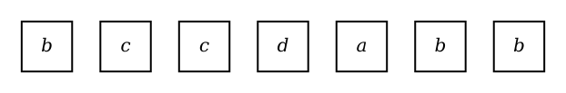
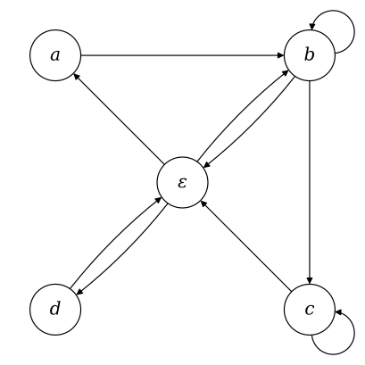
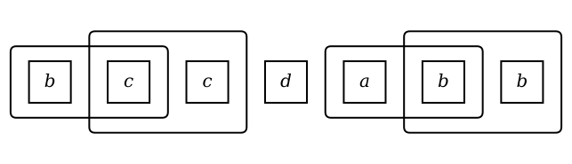

Motivated by higher book-keeping requirements of purely disjoint construction on strings (bigrams, bag-of-words, etc.), we move to a integer, conditional model (Markov chain) whose adaptive (read: combinatorial) equivalent selects one among all possible Eulerian path on a multigraph.
Counting the information of the model then reduces to counting the number of such paths, which is given to us by the BEST theorem.
1 Why Binary Construction
In the realm of simplest possible logics capable of expressing our languages of math or computing, some domains are representable by unary constructors, like the Peano representation of natural numbers
\[\begin{align} 0 &\in \mathbb{N}\\[5pt] n &\in \mathbb{N} \Rightarrow S(n) \in \mathbb{N} \end{align}\]
leading to constructions such as
\[S(S(S(0))) = 3.\]
But anything logic trying to make sense of languages more generally, strings of symbols, etc. construcors with two arguments are necessary. Moreover, two arguments are also sufficient to represent constructors of any arity.
For example, a triple can be represented as a pair nested in another pair
\[(a,b,c) = (a,(b,c))\]
which can be repeated for any number of arguments.
Currying makes functions of any number of arguments representable by functions of one arguments (i.e. arrows of two arguments):
\[A \to B \to C \to D ~~=~~ A \to (B \to (C \to D))\]
which is also implicit in any binary logical or arithmetic operators, made ubiquitous through associativity laws.
More generally, all context-free grammars can be shown to be equivalent to one in Chomsky normal form with only either unary or binary production rules of the form:
\[\begin{align} \{~& A \to BC \\ ,~& A \to a \\ ,~& S \to \epsilon ~~\} \end{align}\]
Given a string generated by an unknown grammar or logic, we can therefore be confident that a regiment of binary construction will at least be capable of representing any of its hidden structure.
2 Complexity Issues
Given the heavy bookkeeping required to make the previous algorithm usable, we approach the implementation with the intention of eliminating all operations equal or greater than \(O(N)\) in complexity, if not for each introduction, then at least for each mutation, and certainly when evaluating each mutation candidate.
Unfortunately, it looks like the expressiveness of joint types introduces too many contextual dependencies to make this possible.
2.1 Counting Joints in a String
For a pair of symbols
\[(s_0,s_1)\]
and a string of length \(N\), the loss associated with its introduction according the the previous logic is a function of three values: individual symbol counts \(n_0\) and \(n_1\), and the joint count \(n_{01}\). All of those parameters can be gathered in one \(O(N)\) pass over the string and only require \(O(n_{01})\) updates per introduction.
When \(s_0 \neq s_1\), all encountered joints count towards the joint count:

but when \(s_0 = s_1\), there is the subtlety that consecutive occurrences of the joint overlap:

and every other pair must be skipped and not contribute towards the joint count \(n_{01}\). This is easily managed by keeping track of parity when encountering spans of identical symbols while scanning the string and discarding joints that are not “constructible”.
2.2 Counting Joints of a Type in a String
For a joint type
\[A \times B\]
and a string of length \(N\), the loss associated with its introduction is a function of the total joint count \(n_m\) and as many individual symbols counts as there are symbols in both unions:
\[\Delta{\bf n} = \{~n_i ~|~ s_i \in A \cup B~\}.\]
Since every new type will produce distinct overlap events along the string, a single pass over the string is no longer sufficient to gather a record of those values.
Still, assuming we do a \(O(N)\) pass over the string for each newly sampled type, we must find a way to efficiently compute or bookkeep the differences in \(\Delta{\bf n}\) produced by each candidate mutation after each mutation application.
This becomes problematic when chains or arbitrary length of overlapping joints
can have their parity flipped by the introduction of a new symbol in the left union

producing a cascading effect in the structure of construction, ultimately only incrementing or decrementing the individual count of the last symbol in the chain.
By itself, this is still manageable if we keep track of all joint sites, constructive or not, for all joints in binary trees that merge and resolve collisions in less than \(O(N)\), keeping pointers between head and tail of each such segment, etc. But deletions of joints at random positions in a segment now requires each joint to also point to either the head or the tail, which would require on the order of \(O(n_m)\) updates at each mutation application, etc.
The simple fact that our permutation format has to deal with the introduction of non-overlapping chunks, while candidates for chunking are overlapping, creates a tension that keeps a seemingly straightforward extension from progressing further.
We therefore swap the underlying combinatorial model for something more appropriate.
3 A Conditional Model
While a multiset permutation model can be simplified by reducing the size of the string through the introduction of ever larger (non-overlapping) chunks,
we would be saved from micromanaging ever expanding sequences of chunks on the working string if we could freely introduce joints that overlap, turning individually separable chunks into something more like transitions between states.
Therefore, instead of using a vector of counts:

that is resolved into a string through the encoding of a permutation:

we transition to using a directed multigraph:

that is resolved into a string through the encoding of a path:


For isntance, in this case, the path
\[\begin{align} \varepsilon &\to \boxed{b} \to \varepsilon \to \boxed{c} \to \varepsilon \to \boxed{c} \to \varepsilon \to \boxed{d} \to \\ \varepsilon &\to \boxed{a} \to \varepsilon \to \boxed{b} \to \varepsilon \to \boxed{b} \to \varepsilon.\end{align}\]
The translation between the first model to the second goes like this: a vertex is introduced for each symbol in the alphabet as well as an auxiliary empty string vertex labeled \(\varepsilon\) (epsilon). For as many occurrences of each symbol there is in the string, pairs of edges go back and forth to the \(\varepsilon\) vertex. Then, any path walking every edge in the graph—a Eulerian path— corresponds to a single string with appropriate symbol counts.
It so happens that counting Eulerian paths in a directed graph is only as complex as computing a certain determinant on the Laplacian matrix which has complexity \(O(n^3)\) for a graph of \(n\) vertices, or \(O(m^3)\) for an alphabet of \(m\) symbols. And since a counting procedure can be converted into an encoding procedure through ranking/unranking, we get both a serialization algorithm and a code length formula.
4 Counting Strings on a Graph
The exact number of Eulerian circuits in a directed multigraph is given by the BEST theorem as the product of the number of spanning trees and the factorial of each vertex’s degree minus one.
\[ec(G) = t(G) \cdot \prod_{v\in V}\left(\mathrm{deg}(v)-1\right)!\]
The number of spanning trees \(t(G)\) is equal—by Kirchhoff’s matrix tree theorem—to the determinant of the submatrix of the Laplacian where one row and one column are removed.
The Laplacian matrix of a directed multigraph is the difference between matrices \(D\) and \(A\):
\[L = D - A\]
where \(D\) is a diagonal matrix holding the outdegree of each vertex and \(A\) is the adjacency matrix where elements \(a_{ij}\) is the number of edges going from vertex \(i\) to vertex \(j\).
Using the example above, we would have the Laplacian:
\[\begin{align}L_{abcd} ~ &=~~\begin{array}{c@{\hspace{4pt}}c} & \begin{array}{ccccccccccc} \varepsilon & a & b & c & d & ~~~~~~~ & \varepsilon & a & b & c & d \end{array} \\[2pt] \begin{array}{c} \varepsilon \\ a \\ b \\ c \\ d \end{array} & \begin{bmatrix} ~~7 & 0 & 0 & 0 & 0~~ \\ ~~0 & 1 & 0 & 0 & 0~~ \\ ~~0 & 0 & 3 & 0 & 0~~ \\ ~~0 & 0 & 0 & 2 & 0~~ \\ ~~0 & 0 & 0 & 0 & 1~~ \end{bmatrix} - \begin{bmatrix} ~~0 & 1 & 3 & 2 & 1~~ \\ ~~1 & 0 & 0 & 0 & 0~~ \\ ~~3 & 0 & 0 & 0 & 0~~ \\ ~~2 & 0 & 0 & 0 & 0~~ \\ ~~1 & 0 & 0 & 0 & 0~~ \end{bmatrix} \end{array}\\[10pt] &=~~\begin{array}{c@{\hspace{4pt}}c} & \begin{array}{ccccc} \,~\varepsilon\,~ & \,~a\,~ & \,~b\,~ & \,~c\,~ & \,~d\,~ \end{array} \\[2pt] \begin{array}{c} \varepsilon \\ a \\ b \\ c \\ d \end{array} & \begin{bmatrix} ~{ 7} & -1 & -3 & -2 & -1~~ \\ ~{-1} & 1 & 0 & 0 & 0~~ \\ ~{-3} & 0 & 3 & 0 & 0~~ \\ ~{-2} & 0 & 0 & 2 & 0~~ \\ ~{-1} & 0 & 0 & 0 & 1~~ \end{bmatrix} \end{array} \end{align}\]
or for any such graph constructed from a mere multiset:
\[\begin{align}L_{\bf n} ~ &=~~ D_{\bf n} - A_{\bf n}\\[10pt] &=~~\begin{array}{c@{\hspace{4pt}}c} & \begin{array}{ccccccccccc} ~~~\varepsilon ~&~ s_0 ~& s_1 & \cdots &~ s_{m-1} ~& ~~~ &~ \varepsilon ~&~ s_0 ~&~ s_1 ~& \cdots &~ s_{m-1}~ \end{array} \\[2pt] \begin{array}{c} \varepsilon \\ s_0 \\ s_1 \\ \vdots \\ s_{m-1} \end{array} & \begin{bmatrix} ~~N & 0 & 0 & \cdots & 0 \\ ~~0 & n_0 & 0 & \cdots & 0 \\ ~~0 & 0 & n_1 & \cdots & 0 \\ ~~\vdots & \vdots & \vdots & \ddots & 0 \\ ~~0 & 0 & 0 & 0 & n_{m-1} \end{bmatrix} - \begin{bmatrix} 0 & n_0 & n_1 & \cdots & n_{m-1} \\ n_0 & 0 & 0 & \cdots & 0 \\ n_1 & 0 & 0 & \cdots & 0 \\ \vdots & \vdots & \vdots & \ddots & 0 \\ n_{m-1} & 0 & 0 & 0 & 0 \end{bmatrix} \end{array}\\[10pt] &=~~\begin{array}{c@{\hspace{4pt}}c} & \begin{array}{ccccc} ~~\varepsilon~~~~~ & ~~s_0~~ & ~~s_1~~ & \cdots & ~~s_{m-1} \end{array} \\[2pt] \begin{array}{c} \varepsilon \\ s_0 \\ s_1 \\ \vdots \\ s_{m-1} \end{array} & \begin{bmatrix} N & -n_0 & -n_1 & \cdots & -n_{m-1} \\ -n_0 & n_0 & 0 & \cdots & 0 \\ -n_1 & 0 & n_1 & \cdots & 0 \\ \vdots & \vdots & \vdots & \ddots & 0 \\ -n_{m-1} & 0 & 0 & 0 & n_{m-1} \end{bmatrix} \end{array} \end{align}\]
where \(N = \sum_i n_i\).
By Kirchhoff’s theorem, the number of spanning trees is the minor resulting from the deletion any one row and any one column in the Laplacian. Arbitrarily, we delete the firsts:
\[t(L_{\bf n}) = \mathrm{det} \begin{bmatrix} ~n_0 & 0 & \cdots & 0~ \\ ~0 & n_1 & \cdots & 0~ \\ ~\vdots & \vdots & \ddots & 0~ \\ ~0 & 0 & 0 & n_{m-1}~ \end{bmatrix} = \prod_{i=0}^{m-1} n_i.\]
Then, the number of Eulerian circuits is
\[\begin{align}ec({\bf n}) &= t(L_{\bf n}) \cdot \prod_{i=0}^{m}\left([D_{\bf n}]_{ii}-1\right)!\\ &= \prod_{i=0}^{m-1} n_i \cdot (N-1)! \cdot \prod_{i=0}^{m-1}\left(n_i-1\right)!\\ &= (N-1)! \cdot \prod_{i=0}^{m-1}n_i! \end{align}\]
which does not correspond to the number of strings (permutations) given a multiset, which is typically computed from the multinomial coefficient:
\[{N \choose n_0,n_1,\ldots,n_{m-1}} ~=~ \frac{N!}{\prod_i n_i!}.\]
4.1 Corrections on the Multiset Case
Inspecting the structure of a Eulerian circuit,
it is defined as a circular sequence of edges, while a string is defined as a sequence of characters, which here correspond to vertices. For each pair of vertices \(u\) and \(v\), all edges \(u \to v\) and all edges \(v \to u\) form equivalence classes that are overcounted in the number of Eulerian circuits from the perspective of strings.
Because in this case there are \(n_i\) incoming and outgoing edges for each symbol vertex, we get
\[\begin{align}\frac{ec({\bf n})}{\prod_i (n_i!)^2} &= \frac{(N-1)! \cdot \prod_i n_i!}{\prod_i (n_i!)^2}\\[10pt] &= \frac{(N-1)!}{\prod_i n_i!}. \end{align}\]
Finally, the BEST theorem counts unrooted circuits, meaning paths with their ends connected, a.k.a. cycles. On the other hand, a string has a definite beginning and end. This means the formula undercounts the number of strings by a factor of \(N\)—or the number of places a circuit can be “cut” into a string.
\[\begin{align}\frac{ec({\bf n}) \cdot N}{\prod_i (n_i!)^2} &= \frac{(N-1)!}{\prod_i n_i!} \cdot N \\[5pt] &= \frac{N!}{\prod_i n_i!}\\[5pt] &= {N \choose n_0,n_1,\ldots,n_{m-1}} \end{align}\]
With these corrections to the the BEST theorem, we can produce a formula for the number of strings given the adjacency and degree matrices.
4.2 General Formulation
Starting from the BEST theorem,
\[ec(D,A) = t(L) \cdot \prod_{i=0}^m\left(D_{ii}-1\right)!\]
we divide by the factorial of the size of each set of equivalent edges—which are all the entries of the adjacency matrix:
\[\begin{align}\frac{ec(D,A)}{\prod_{i,j}A_{ij}!} &= \frac{t(L) \cdot \prod_{i=0}^m\left(D_{ii}-1\right)!}{\prod_{i,j}A_{ij}!} \end{align}\]
and multiply by the number of ways to cut open a circuit at the starting vertex \(\varepsilon\):
\[\begin{align}\frac{ec(D,A) \cdot D_{00}}{\prod_{i,j}A_{ij}!} &= \frac{t(L) \cdot \prod_{i=0}^m\left(D_{ii}-1\right)! \cdot D_{00}} {\prod_{i,j}A_{ij}!}\\[10pt] &= \frac{t(L) \cdot D_{00}! \cdot \prod_{i=1}^m\left(D_{ii}-1\right)!} {\prod_{i,j}A_{ij}!}. \end{align}\]
5 Example
Using a graph instead of a multiset as a parametric model allows us to use counts of intersecting joints in the string. Consider the following chunking of the example string and corresponding graph.


The path to be encoded becomes
\[\varepsilon \to \boxed{b} \to \boxed{c} \to \boxed{c} \to \varepsilon \to \boxed{d} \to \varepsilon \to \boxed{a} \to \boxed{b} \to \boxed{b} \to \varepsilon.\]
The degree, adjacency and Laplacian matrices are:
\[\begin{align}L_{abcd}' ~ &= D_{abcd}' - A_{abcd}'\\[10pt] &=~~\begin{array}{c@{\hspace{4pt}}c} & \begin{array}{ccccccccccc} \varepsilon & a & b & c & d & ~~~~~~~ & \varepsilon & a & b & c & d \end{array} \\[2pt] \begin{array}{c} \varepsilon \\ a \\ b \\ c \\ d \end{array} & \begin{bmatrix} ~~3 & 0 & 0 & 0 & 0~~ \\ ~~0 & 1 & 0 & 0 & 0~~ \\ ~~0 & 0 & 3 & 0 & 0~~ \\ ~~0 & 0 & 0 & 2 & 0~~ \\ ~~0 & 0 & 0 & 0 & 1~~ \end{bmatrix} - \begin{bmatrix} ~~0 & 1 & 1 & 0 & 1~~ \\ ~~0 & 0 & 1 & 0 & 0~~ \\ ~~1 & 0 & 1 & 1 & 0~~ \\ ~~1 & 0 & 0 & 1 & 0~~ \\ ~~1 & 0 & 0 & 0 & 0~~ \end{bmatrix} \end{array}\\[10pt] &=~~\begin{array}{c@{\hspace{4pt}}c} & \begin{array}{ccccc} \,~\varepsilon\,~ & \,~a\,~ & \,~b\,~ & \,~c\,~ & \,~d\,~ \end{array} \\[2pt] \begin{array}{c} \varepsilon \\ a \\ b \\ c \\ d \end{array} & \begin{bmatrix} ~{ 3} & -1 & -1 & 0 & -1~~ \\ ~{ 0} & 1 & -1 & 0 & 0~~ \\ ~{-1} & 0 & 2 & -1 & 0~~ \\ ~{-1} & 0 & 0 & 1 & 0~~ \\ ~{-1} & 0 & 0 & 0 & 1~~ \end{bmatrix} \end{array}. \end{align}\]
The cofactor of the Laplacian and number of spanning trees is
\[t(L_{abcd}') = \mathrm{det} \begin{bmatrix} ~1 & -1 & 0 & 0~ \\ ~0 & 2 & -1 & 0~ \\ ~0 & 0 & 1 & 0~ \\ ~0 & 0 & 0 & 1~ \end{bmatrix} = 2\]
making the number of Eulerian circuits
\[\begin{align}ec_{abcd} &= t(L_{abcd}') \cdot \prod_{i=0}^{m}\left([D_{abcd}']_{ii}-1\right)!\\ &= 2 \cdot 2! \cdot 0! \cdot 1! \cdot 0! \cdot 0!\\ &= 4 \end{align}\]
and the number of strings
\[\frac{ec_{abcd} \cdot [D_{abcd}']_{00}}{\prod_{i,j}[A_{abcd}']_{ij}!} = \frac{4 \cdot 3}{1} = 12\]
which—since there are two ways to arrange the joints into three contiguous chains of joints—are as follows (our string in parens):
abb bcc d ab bbbc d
abb d bcc ab d bbbc
bcc abb d bbbc ab d
(bcc d abb) bbbc d ab
d abb bcc d ab bbbc
d bcc abb d bbbc ab.One can observe in the above enumeration that some strings of chunks
will become equivalent after concatenation since there are two ways to
walk across the graph to produce the substring a-b-b-b-c-c, namely
abb [ε] bccand
ab [ε] bbccwhich results in two pairs of equivalent strings in our enumeration, bringing the actual number of string to 10.
While only the first subpath is canonical for this substring assuming eager construction, I’m unsure of a the exact way to count and subtract those from the computation efficiently.
Ultimately, it is also possible that this increase in number of strings is not large enough to warrant consideration. Since code length is the log of the variety, as long as there are less non-canonical than canonical strings in our count, as is the case here, the difference in code length will be less than 1 bit.